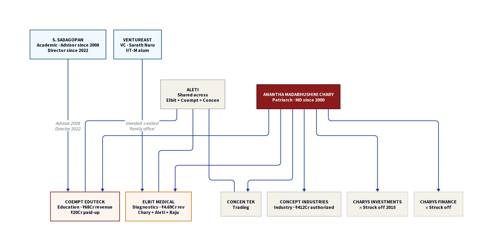

The Chary Family, S. Sadagopan, and Ventureast — How a Small Hyderabad Firm Captured India's Exam Infrastructure
| ← Sector-wide analysis
Summary
Coempt EduTeck (formerly Globarena Technologies) is controlled by the Chary family from Hyderabad, operating through 11+ interlocking companies since 2000.
Prof. S. Sadagopan, one of India's most networked academics, has been advising the company since July 2008 — 14 years before formally joining the board in September 2022.
Ventureast, India's oldest VC firm, invested in the Charys' healthcare company (Elbit Medical Diagnostics) and exited to a "family office."
The CBSE OSM tender was re-engineered after initial failures — conditions were relaxed, and Coempt won.
Coempt had already bungled the 2019 Telangana Intermediate exams before winning the CBSE contract.
The Chary Family Network

Fig 1. The Chary family corporate network. Red = Coempt ecosystem. Blue = external actors (Sadagopan, Ventureast). Grey = struck-off entities.
I. The Chary Family: Twenty-Six Years of Education Infrastructure
The Patriarch
Anantha Madabhushini Chary (DIN 00005042) is among the earliest directors ever registered in India's MCA database — his DIN places him in the first ~55 directors in the country. Over 32+ years, he has been associated with at least 11 companies spanning education technology, medical diagnostics, pharmaceuticals, trading, and finance.
He founded Globarena Technologies Private Limited on 11 April 2000 (CIN U72200TG2000PTC034224). The company was registered at Hyderabad, Telangana. In 2019, Globarena rebranded to Coempt EduTeck — a name change that coincided with the Telangana Intermediate exam scandal that nearly destroyed the company.
Chary is the Managing Director and the constant presence across the company's entire 26-year history. Every other director has come and gone. He remains.
The Co-opted Directors
Director
DIN
Since
Background
Anantha Madabhushini Chary
00005042
2000
MD. 11+ companies. 32yr corporate career.
Suryanarayana Vuyyuri Raju
—
2000
CEO. Named in Telangana 2019 scandal. Media-confirmed as company spokesperson.
Venkatanarayana Aleti
02379881
~2001
Long-time associate. Shares directorships with Chary in Elbit Medical Diagnostics and Concen Tek.
S. Sadagopan
00118285
Sep 2022
Academic. Former Director IIT Madras Research Park. Had been advising Globarena since 2008.
The Family Companies
The Chary network extends far beyond Coempt:
1. Elbit Medical Diagnostics Private Limited
Est. 1995, Hyderabad. Directors: Chary, Aleti, Raju — the identical trio from Coempt. Authorized capital: ₹40 crore. Paid-up: ₹6.13 crore. Revenue: ₹4.69 crore (FY2025). This is the company that connected the Charys to Ventureast — India's oldest venture capital fund invested in Elbit Medical Diagnostics, then exited.
Telangana. Directors: Chary, Narahari Desika Chary Kandala (family member — possibly son or nephew). Massive authorized capital of ₹412 crore — disproportionate to Coempt's ₹25 crore.
Hyderabad. Directors included Satish Vedala and Madhusudhan Lakshmi Narasimha Vedala — two of Coempt's past directors. The Vedala family were early collaborators with the Charys.
Key pattern: The Chary family operates through a constellation of companies across education, healthcare, pharma, trading, and finance. Two entities were struck off by the Registrar of Companies — a flag that warrants scrutiny, though not necessarily indicative of wrongdoing.
II. S. Sadagopan: The Academic in the Room
Who Is He?
Professor Sowmyanarayanan Sadagopan (DIN 00118285) is one of India's most networked academics:
IIT Kanpur faculty (1979–1995)
IIM Bangalore faculty (1995–1999)
Founder-Director, IIIT Bangalore (1999–2021) — 22 years
Director/governor at: IIT Madras Research Park, IDRBT (RBI's banking tech institute), BEL, Bank of India, NMDC, NLC India, NTPC, IOCL, Indian Overseas Bank, IREDA, BEML, NSE, Tata Elxsi, Ajax Engineering, and others.
Currently at Ahmedabad University as a professor.
The Globarena Connection
"Advisor, Globarena, (Strategic Business) (Jul 2008 onwards)"
— Sadagopan's own website, profsadagopan.com/board-membership-consulting.html, under "Mentoring Startups"
This means:
He advised Globarena for 14 years before formally joining the board in September 2022.
His advisory tenure covers the 2017 Telangana TSBIE contract (₹4.3 crore) and the 2019 Telangana Intermediate exam disaster.
His advisory also covers the period when Globarena rebranded to Coempt and bid for the CBSE OSM contract.
The Revolving Door
Sadagopan's career illustrates a structural problem in Indian governance: the same individuals circulate between academia, government advisory bodies, PSU boards, and private companies — often in sectors that overlap with their advisory roles.
The Unanswered Questions
Question
What We Know
What We Don't
Was his advisory paid?
He lists it under "Mentoring Startups"
No financial details publicly available
Did he hold equity?
No MCA record of shareholding
MCA captures directorships, not advisory equity
Did he influence procurement?
No evidence of specific committee role in CBSE/NTA/SSC
The overlap of roles creates structural access
Why join the board 14 years later?
Coincident with rebrand from Globarena to Coempt
Could be credibility repair, could be deeper involvement
The charitable reading: He's a prolific mentor who happened to advise a startup, didn't steer any contracts, and joined the board late as a credibility booster for a company rebuilding after the Telangana disaster.
The structural concern: India has no mandatory disclosure requirements for informal advisory roles to companies holding government contracts.
III. Ventureast: The VC Gateway
The Firm
Ventureast, founded by Sarath Naru in 1997, is India's longest-standing venture capital firm. Assets under management: $400+ million across 6 funds. Portfolio: 80+ companies. HQ: Bangalore.
The Founder: Sarath Naru
B.Tech, IIT Madras. MBA, University of Chicago Booth. Lives across Chennai, Hyderabad, and Bangalore — the three cities that form the Chary-Coempt geographic triangle.
The Elbit Investment
Ventureast's own website lists Elbit Medical Diagnostics as a portfolio company. Status: "Exited to family office." Elbit is the company where Chary, Aleti, and Raju served as directors.
Fig 2. The capital connection: Ventureast → Elbit Medical (Chary trio) → Coempt EduTeck
The IIT Madras Link
Naru is an IIT Madras alumnus. Sadagopan served as Additional Director on the IIT Madras Research Park board. IIT Madras Research Park is India's premier deep-tech incubation ecosystem. The IIT Madras thread connects all three nodes.
IV. The Convergence — Timeline
1995
Elbit Medical Diagnostics founded (Chary + Aleti + Raju)
Telangana Intermediate results bungled — students protest, re-evaluation ordered
2019
Globarena rebrands to Coempt EduTeck
Sep 2022
Sadagopan joins Coempt board as Additional Director
2024–25
CBSE awards OSM contract to Coempt. Revenue hits ₹68 crore (FY2025)
May 2026
CBSE OSM scandal breaks — scan/blur/swap complaints surface
V. What This Means
The Structural Problem
India's examination technology market — worth thousands of crores across CBSE, NTA, SSC, and state boards — is served by a handful of small, opaque companies with interlocking directorships, academic advisors, and VC connections.
Coempt EduTeck is not an anomaly. It is a case study in how this market works:
Small companies with limited accountability capture massive government contracts
Academic advisors provide institutional credibility without mandatory disclosure
Revolving doors between government boards and private companies go untracked
Tender processes get re-engineered when large players (TCS) outbid small firms
Cross-party political connections insulate companies from political risk
What We Know for Certain
Coempt EduTeck is a Chary family-controlled company operating through 11+ interlocking entities since 2000.
S. Sadagopan advised the company for 14 years (2008–2022) before joining the board, per his own website.
Ventureast invested in the Charys' healthcare company (Elbit Medical Diagnostics) and exited to a "family office."
The CBSE OSM tender was re-engineered — conditions were relaxed, and Coempt won.
Coempt has faced major exam bungling before — the 2019 Telangana Intermediate results disaster.
The reform question: The CBSE OSM scandal is not primarily about Coempt. It is about a system that allows opaque companies to become the nervous system of public examinations — with no transparency on advisory relationships, no cooling-off periods between government service and private board seats, and no mandatory disclosure of financial ties between academic advisors and exam-tech vendors.
India moved 18.5 lakh answer sheets through a company controlled by a family with a record of exam bungling, advised by an academic with government governance roles, connected to a VC firm with institutional ties to the ecosystem.
That the system permitted this is the scandal. The scan errors and blurred marks are just the symptoms.
Editorial Note on Ambiguous Names: The name Radhakrishnan Jayaraman appears in multiple public records and may refer to more than one person. This report intentionally makes no claim about any specific individual with that name.